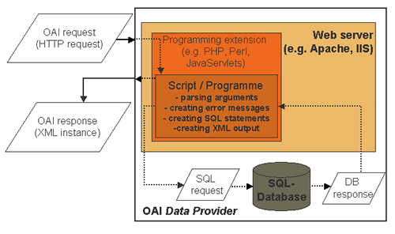

Kurzus tematikája
- Weboldalak felépítése, frontend és backend fogalma
- Weboldal szerkezetének kialakítása HTML-lel, stílusozás CSS segítségével
- Dinamikus weboldalak készítése és interaktivitás JavaScript használatával
- Szerveroldali programozás és adatbázisok kezelése (pl. Node.js, PHP, MySQL)

A képre kattintva vissza léphetsz a kezdőlapra